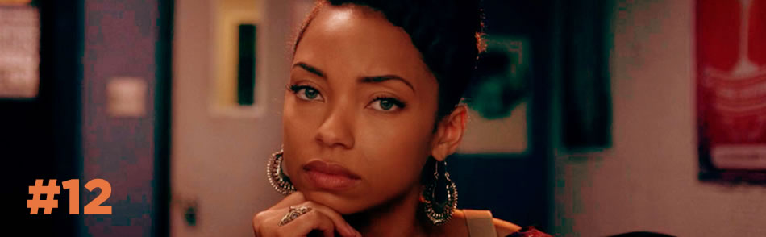

ISSN 2237-3381 Revista dos Cursos de Cinema do Cearte UFPEL nº12 ano 2017
apresentação
expediente
normas
edições anteriores
contatos

editorial:
Por que ler
Na Orson 12, temos o Dossiê Ficção Seriada, explorando o universo das produções em série.
Orson na íntegra para tablet's
Faça o download da Revista Orson para ler offline em seu tablet ou pc/mac.
Submissão de artigos
Procedimentos e normas para publicação de artigos na Orson.
artigos temáticos
De máquinas a robôs e da inteligência à consciência: diálogos entre Robótica, Inteligência Artificial e Ficção
Lívia de Pádua Nóbrega
Spin-off e Direção de Arte em Psicose e Bates Motel: objetos como personagens sinistros a serviço da dualidade na narrativa
Patrícia Azambuja
Jocy Meneses Dos Santos Jr
Jéssica Reis Araujo
Velhice e sexualidade: recepção e consumo da série Grace And Frankie por espectadores brasileiros da Netflix
Luciano da Rosa Marafon
Dafne Reis Pedroso da Silva
Ficção seriada: binge watching e estrutura narrativa em Stranger Things e Twin Peaks
Débora Mitie
Bruno Leites
Colorismo e negritude em Cara Gente Branca
Isadora Ebersol
artigos sobre cinema e audiovisual
Transgressão de gênero, performatividade e violência em Tomboy
Caio Ramos da Silva
Alexandre Rocha da Silva
Cinema brasileiro para além do espetáculo: pistas para uma curadoria criativa em cinemas universitários
Cíntia Langie
No Intenso Agora e a memória que falta
Ivonete Pinto
A cidade pós-moderna, a cidade hiper-real: Imagens da distorção em Lyotard e Baudrillard
Daniel Feix
o que estamos lendo
Trajetórias da crítica cinematográfica em Porto Alegre
Carlos Eduardo da Silva Ribeiro
com quem estamos conversando
Entrevista: Fabio Yamaji
Carla Schneider